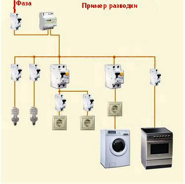

Качественный электромонтаж в Санкт-Петербурге и ленобласти, стаж 12 лет. Частный электрик, недорого и качественно.
Телефон - 8 904 642 08 57. Николай.

Электрика в однокомнатной квартире.
Обязательные моменты электропроводки в однокомнатной квартире.
Посмотрите цены и позвоните!
Электрика в однокомнатной квартире важна так же как и в огромном доме. И это мнение существует вовсе не случайно, просто потому, что каждый должен обязательно учитывать тот факт, что наличие устаревшей, и даже в каких-либо местах на территории дома, неисправной электропроводки грозит, что ни на есть, самой непредсказуемой катастрофой.
Когда нужно менять проводку.
А именно, замена проводки в однокомнатной квартире требуется непременно, если хозяин предполагает сделать в ней дорогостоящий ремонт, который еще усугубит под влиянием расходных строительных материалов, существующие старые кабеля.
Например: нанесение на стену или какую-либо другую поверхность грунтовки, шпаклевки, краски, клея для обоев, влечет водопроницаемость, которая в любом случае дойдет до устаревших электропроводных сетей в доме.
Стоимость такого ремонта, никогда в жизни не станет радовать, а также оправдывать себя. Просто-напросто, потому что в случае обычного замыкания или перегорании провода придется избавиться от вновь сделанного косметического ухода.
Сколько стоит сделать электрику под ключ однокомнатной квартиры?
|
Вариант электромонтажа |
Цены в рублях. |
|
Электромонтаж однокомнатной квартиры под ключ. |
30000 |
|
Замена электропроводки в однушке. |
22000 |
|
Подключить стиральную машину под ключ. |
2500 |
|
Электромонтаж ванной комнаты. |
5500 |
|
Электромонтаж в кухне. |
9000 |
|
Поменять проводку в комнате. |
8000 |
|
Монтаж розетки, выключателя. |
300 |
Хочется непременно напомнить, что цена проведения электрики в однокомнатной квартире под ключ не считается супер дорогостоящим удовольствием. Т.е. расчет по предлагаемой площади достаточно невелик, если обращаться к добросовестным профессионалам дела.
Бригада электриков в однокомнатной квартире.

Речь идет о высококвалифицированном обслуживании бригады мастеров в СПБ и московской области, которые в состоянии не только грамотно произвести весь перечень услуг связанных с косметическим или капитальным ремонтом. Но и, конечно, же, выполнить полноценную проводку в квартире по доступной стоимости. Выделим лишь основные преимущественные особенности работы конкурентоспособной бригады мастеров.
В первую очередь, по фактам конкретных требований будущей электрической проводки в жилье, мы рассчитываем будущую окончательную ценовую категорию услуг и примерную стоимость расходного материала, покупка которых осуществляется, как самостоятельно заказчиком, так и при помощи совместно с клиентом.
Во вторую очередь, бригада мастеров работает на рынке всевозможных актуальных строительных услуг уже очень много лет, что гарантирует возможные скидки на электротовары и оборудование в специализированных магазинах.
В третью очередь, мы уверенны в том, что выполняем свои обязанности на высококачественном уровне, Бригада мастеров в состоянии нести ответственность за произведенный труд, а также дать ценные рекомендации на будущее по поводу использований каких-либо дополнительных электроприборов.
Сэкономьте на электромонтаж, позвоните нам.
Итак, сегодня вы заинтересованы в качественной и долговечной электрики в однокомнатной квартире, то сейчас вы находитесь по абсолютно правильному адресу. Ведь, не забывайте о том, что старинная поговорка "за спрос в нос не бьют" до сих пор действует, и мы знаем, что можем найти подход к весьма каждому клиенту.
Вывод: не допускает напрасных рисков, ведь электрика в квартире – это непредсказуемое явление в случае ее неисправности.

Сколько будут стоить материалы.
Расценки на электропроводку.
Электромонтаж в доме.
Замена электропроводки в двухкомнатной квартире?.
Сколько стоит сделать внутреннюю проводку?.
Установка люстр и светильников.
Электромонтаж проводов в бане.